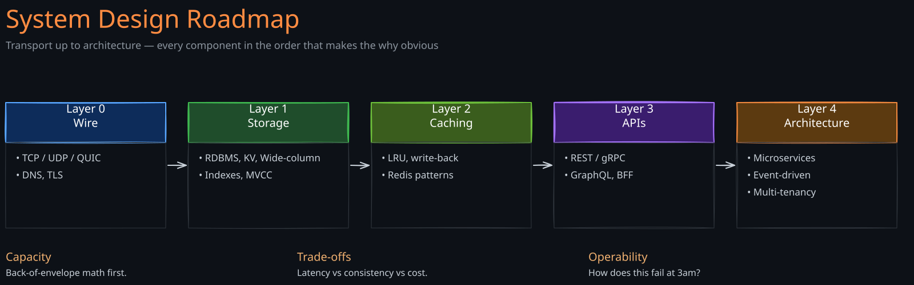

System design interviews ask you to assemble — under time pressure — a coherent answer to a question your interviewer has been thinking about for weeks. The trap is to memorize a Lego catalog of components and snap them together. The actually useful skill is to know why each component exists, which problem it solves cheaply, and what it costs the rest of the system to introduce it.
This roadmap reads the published notes in the order that makes the why obvious. By the time you reach Kafka or DynamoDB, you’ve already paid the dues that explain why they look the way they do.
Read in order
Layer 0 — what the wire looks like
- TCP, UDP, QUIC — The transport that everything above assumes. Without this, decisions about gRPC vs REST, WebSockets vs polling, and connection pooling are guesswork.
Layer 1 — APIs and the contract at the edge
- API Design — Naming, versioning, idempotency, pagination. The boring decisions that determine whether a v1 API survives to v2.
- API Gateway — Centralizing cross-cutting concerns at the edge: auth, rate limiting, observability. When the gateway is the right answer and when a load balancer plus a shared library wins.
- GraphQL — Where it earns its complexity (mobile, BFFs, schema federation) and where it doesn’t.
- gRPC vs REST — REST works until JSON parse cost dominates your CPU bill. Then it doesn’t.
Layer 2 — caching, the cheapest performance fix
- Caching Techniques — Cache-aside, write-through, write-back, the consistency cost of each.
- Consistent Hashing — How distributed caches actually partition keys. Virtual nodes, jump hash, why naïve
hash(key) % Ncollapses on resize.
Layer 3 — databases and the durability story
- Database Concepts — Storage engines, indexes, write-ahead logs, the LSM/B-tree split. The vocabulary every later database note assumes.
- CAP and PACELC — The trade-off everyone quotes incorrectly. PACELC is the version that survives contact with real systems.
- Isolation Levels — Read committed, repeatable read, serializable — and the anomalies each one quietly permits.
- MVCC — How modern databases give you snapshot isolation without lock storms. The technique under PostgreSQL, MySQL InnoDB, Spanner, and most cloud OLTP engines.
- Redis — The in-memory data structure server that doubles as a cache, a queue, a rate limiter, and (carefully) a lock manager.
- DynamoDB — The first paper that made consistent hashing + quorums + leader-less replication a commercial product. The shape of every cloud KV store since.
Layer 4 — messaging and asynchronous flow
- Kafka — Partitioned, replicated, append-only logs. The substrate under modern event-driven architectures and most CDC pipelines.
- Event Sourcing & CQRS — When the audit trail is the database. The pattern that pays for itself in finance, ledgers, and anywhere “what was the state at 9:47” is a real question.
Layer 5 — architecture patterns
- Fan-Out Strategies — Push, pull, hybrid. The reason your social-feed reads are O(1) and the cost is paid by your writes.
- Backend for Frontend — One API per client. When the abstraction earns its keep and when it’s just a microservice without a name.
- Choreography vs Orchestration — Two answers to “who knows the workflow.” Choreography scales the team org chart; orchestration scales the debugger.
- Multi-Tenancy — Pool, silo, bridge. The cost model that decides your gross margin.
Layer 6 — operability
- Observability — Logs, metrics, traces, and the difference between monitoring (known-unknowns) and observability (unknown-unknowns).
Where to go next
- Distributed Systems — see the Distributed Systems Roadmap for the theory under most of the components above.
- AI Systems — the AI Systems Roadmap is the same shape applied to embeddings, vector search, RAG, and serving.
- Series — the Production Systems Deep Dives series unpacks Kafka, Spanner, DynamoDB and Zanzibar in note-length detail.
The list reflects what’s published today. As more notes ship from the vault (messaging deep-dives, lakehouse, search), the path will grow.
Discussion
Comments are open. Anonymous is fine — pick any name and post. Comments appear after a quick moderation check.